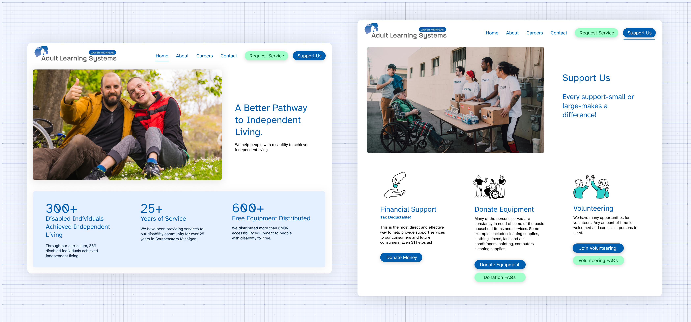
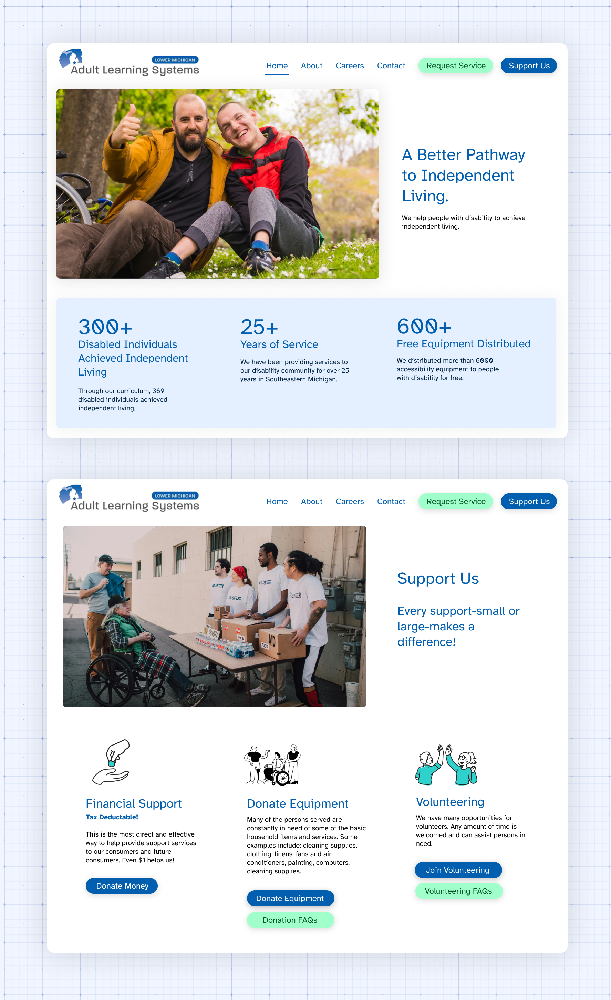

Rescuing a Nonprofit's Donation Flow
5/5 A/B testing participants preferred the redesigned donation flow for confidence. NPS improved from 1.25 → 7.0 average.
Technology
Figma
Scope
UX Research, Interaction Design, Usability Testing, A/B Testing
A semester-long UX redesign of Adult Learning Systems — Lower Michigan's donation flow, using the UX Research method to form, test, and revise design hypotheses.
The Problem
ALS-LM is a 501(c)(3) serving adults with disabilities in South East Michigan. Their donation page requires mailing physical cash, and no digital payment exists. The site's overall design lacks professional visual design, having long and information dense paragraphs, and may lack trust signals. These issue creates a trust and conversion barrier.
Diagnosis
- Persona: John, a middle-aged donor with disposable income, altruistic, interested in the cause
- Peak-End Rule applied: the ending (users seeing mail-only) is the worst moment, and per Peak-End, users disproportionately remember the ending
- Psych scores table (compact): Steps 1–5 with scores (+10, +5, -15, -10, -20)

Hypothesis
I made six falsifiable hypothesis and predictions, each grounded in a named design principle.
- H1: A less dense paragraph with icons makes people more willing to read (Reduces Cognitive load)
- H2: Displaying impact metrics on the homepage increases persuasion (social proof from Cialdini)
- H3: Adding client testimony increases persuasion.
- H4: Providing a digital donation flow increases task completion likelihood
- H5: Adding a staff group photo on the last page increases personal connection and increases return intent (Peak-End Rule)
- H6: Social media CTA post-donation increases follow behavior
The Redesign

Added Impact statistics (300+, 25+, 600+) on homepage → tests H2

Added client testimony with photo → tests H3

Added digital donation form with preset amounts → tests H4

Re-arrange support Us layout with 3 illustrations → tests H1

Add a thank You page post donation with group photo and social media links → tests H5, H6"

Before

After
Reduced CARF paragraph text → tests H1
A/B Testing
Due to Time constraints, I could only recruit users from or close to academia. But I tried to list the criteria that are potentially most likely to donate.
I recruited and tested 5 users, 3 of whom are younger adults in their early career phase, and 2 of them are mid to late adults. 2 of them are currently students who have had full-time job experience, 1 is currently full-time at a religious/non-profit industry, 1 researcher/professor at UM, and 1 software developer.
Test protocol summary
Think-aloud, 3 tasks per version, post-test survey with NPS/WoMI/trust/confidence/engagement/conversion/retention
Key Findings
- H1: ⚠️ Falsified - 3/5 expressed opposite: they wanted MORE detail (contradicts assumption)
- H2: ✅ Verified (3/5), with no opposites
- H3: ⚠️ Weak (1/5), with no opposites
- H4: ✅ Strongest (4/5), with no opposites
- H5: ❌ Unfalsifiable from data
- H6: ⚠️ Weak (1/5), the participant expressed that he cares about where his money goes after donation, and he needs to follow their social media to find that out.
Key Discovery: The Information Density Paradox
The initial hypothesis assumed less text = more engagement. Testing revealed a tension: reduced text improved scannability but decreased trust. I originally assumed that with less text, people are more willing to read paragraphs, but with reduced text, people are less likely to trust the organization. 3 participants expressed that they want to see the detailed information because they want to see if the organization has real impacts or not.
Additional Findings
Findings on what increases trustworthiness
- 4 of 5 participants expressed that trustworthiness comes from knowledge and familiarity with the organization, so that they are more willing to donate
- 1 participant expressed that adding a text that "we won't sell your information" or "we won't spam your email" would increase trustworthiness.
Findings on the unexpected constraints of this study
- The About page is not available when testing, because one participant expressed that they want to know more about the organization, and wants to click on the About page to know more about them, so they feel safer donating.
- Some images are generic images from Pexels/Unsplash; one participant commented that these images look fake.
- One A/B testing was conducted after a class; one participant may be tired and give more generic thoughts.
- Figma does not allow input; therefore, it's hard to tell if the checkout form would decrease the motivation of the users when they are filling out these forms.